Chapter 1: Style Settings
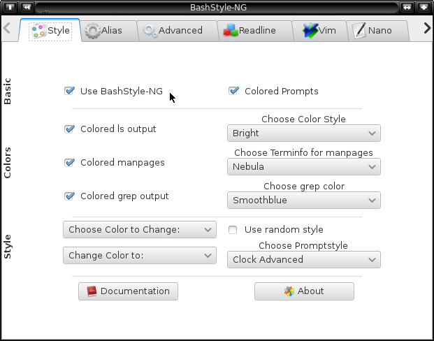
1.0 Use BashStyle-NG:
This enables BashStyle-NG and let's it manage your bash.
1.1 Colored Prompts:
This enables colorful bashprompts. Else they'll become monochrome.
1.2 Colored ls output:
This will color the output of `ls' according to
$LS_COLORS.

1.3 Change Color Style:
Choose the way colors are drawn:
| Normal |
example |
| Bold |
example |
| Dimmed |
example |
| Inverted |
example |
| Underlined |
example |
1.4 Colored Manpages:
Enables the use of a special terminfo file, which will color manpages.
1.5 Terminfo for Manpages:
Choose which terminfo-file to use for coloring man pages:
1.5.0 Terminfo: Mostlike
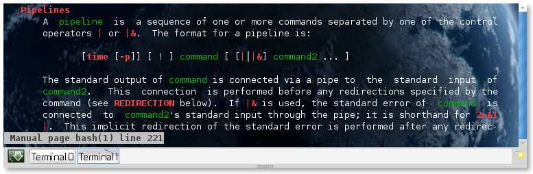
1.5.1 Terminfo: Bold
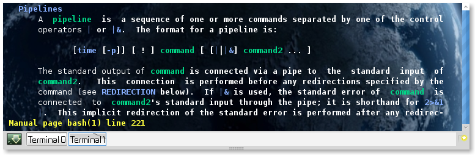
1.5.2 Terminfo: Nebula
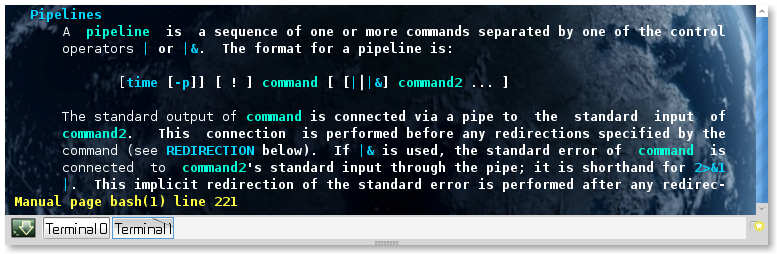
1.6 Colored grep output:
When enabled, grep colors it's output.

1.7 Choose Grep Color:
Choose the color for matching words in greps output.
1.8 Choose Color to Change/Change Color to:
Choose a part of the prompt and change it's color.
1.9 Use random style:
Choose a random style at start up.
1.10 Choose Style:
Choose what style to use for your Bashprompt
Available Styles:
1.10.0 Style: Separator
[This Style has Options on the `Extras'-Page]
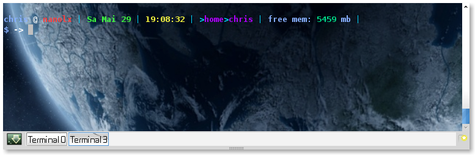
1.10.1 Style: Vector

1.10.2 Style: Floating Clock

1.10.3 Style: Clock-Advanced
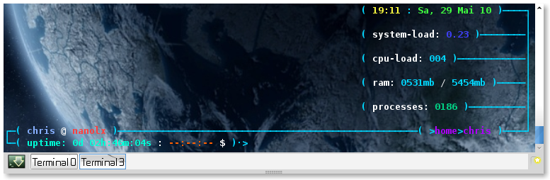
1.10.4 Style: Elite
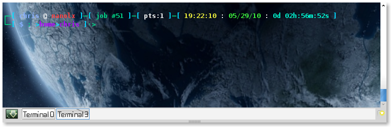
1.10.5 Style: PowerUser

1.10.6 Style: Dirks

1.10.7 Style: .Prompt
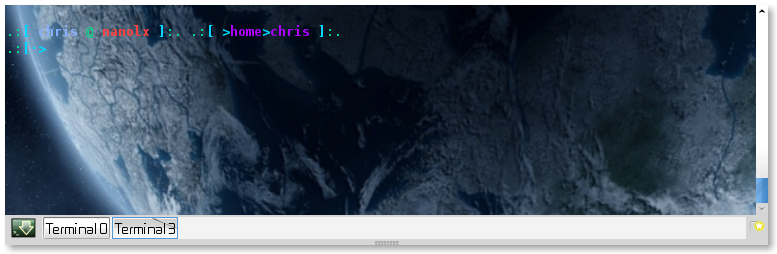
1.10.8 Style: Sepa-NG
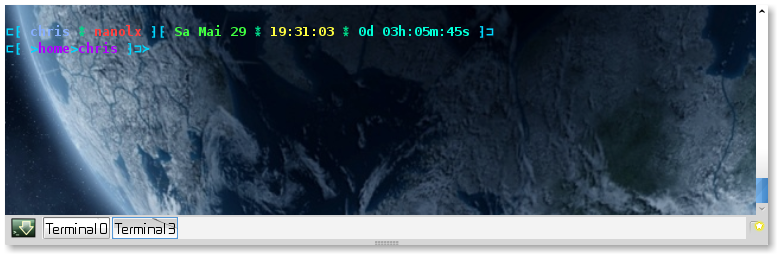
1.10.9 Style: Quirk
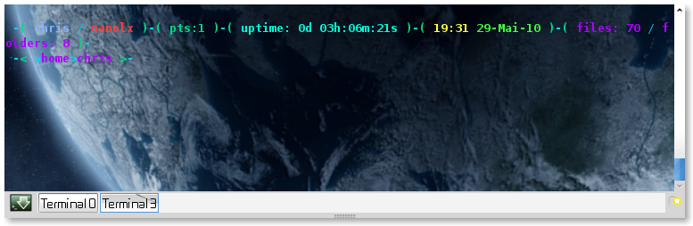
1.10.10 Style: Sputnik
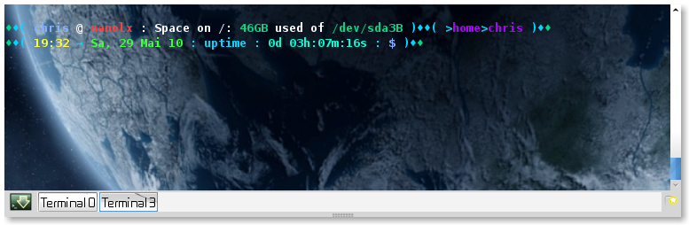
1.10.11 Style: Ayoli
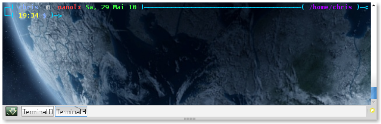